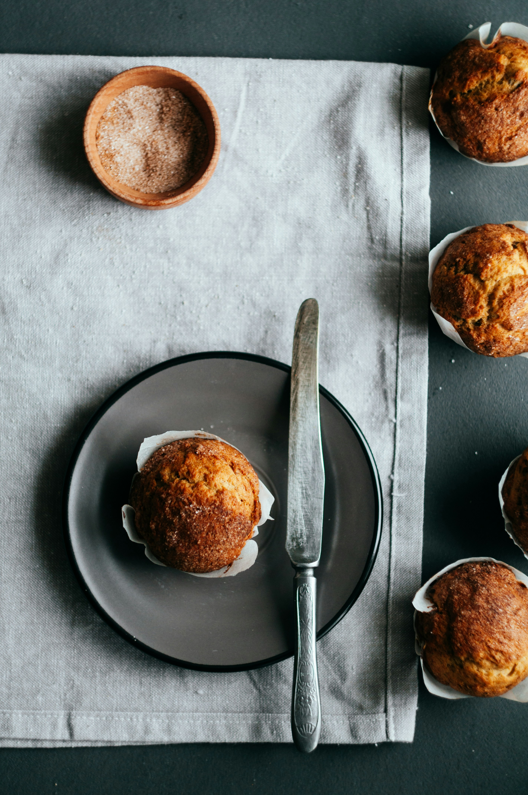

My Monthly Fall Batch

I made these muffins for fall, and they've quickly become one of my favourite things to bake. They're a great quick breakfast or a snack before training, and honestly, they don't taste sugar free at all. The banana, pumpkin, and maple syrup make them naturally sweet, and the cinnamon and pumpkin spice give them that cozy fall flavour.
I prep a batch every month, and whatever I won't eat that week goes straight into the freezer, so I always have something ready when I'm busy. Just pop one in the microwave for 10 seconds and it's warm and ready to go. Having them on hand helps me avoid random snacks and makes it way easier to get my protein up.
They're also perfect before a run. I like to eat one about an hour before heading out, so I have enough energy without feeling heavy. After a workout, they make a great snack, or a treat when I want something sweet without sacrificing my progress.